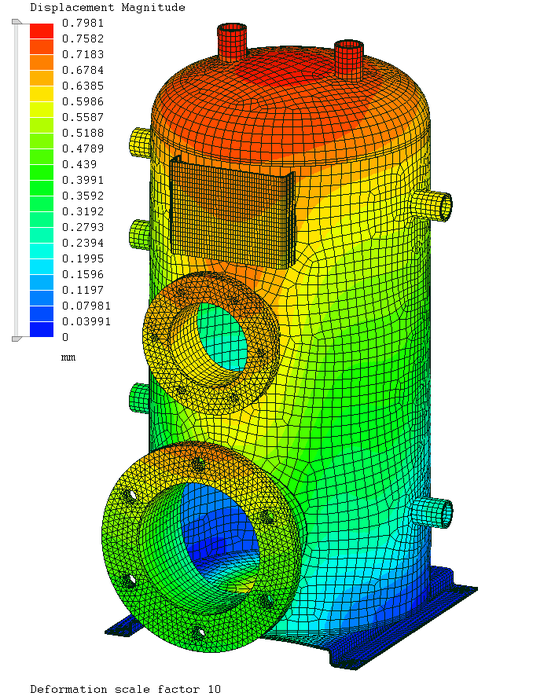

Alcance destacado
- Cálculo de espesores, tapas, boquillas y refuerzos.
- Análisis de MAWP, MDMT y condiciones de presión externa.
- Diseño de faldones, silletas, anillos rigidizadores y soportes.
- Planos de fabricación y Data Book técnico para inspección.
Servicio de ingeniería para recipientes a presión con documentación lista para fabricación, revisión técnica y procesos de certificación.

DISMEK presta este servicio desde Bucaramanga para clientes en Santander, Colombia y proyectos con soporte remoto en otras regiones.
El trabajo se orienta a producir ingeniería clara, documentada y utilizable para revisión, compra, fabricación, instalación o ejecución, según la necesidad del proyecto.
Si tu proyecto combina varias disciplinas, revisa estos servicios relacionados para estructurar mejor el alcance.
DISMEK puede revisar tu alcance, ayudarte a aterrizar entregables y preparar una propuesta ajustada a tu proyecto.